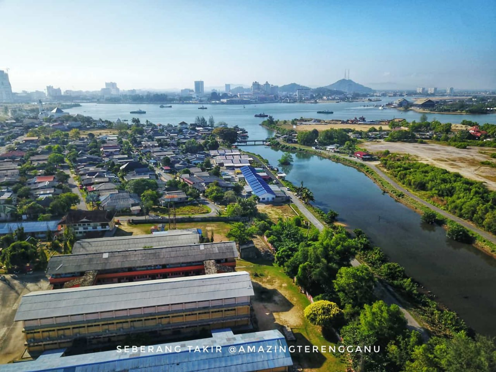

Seberang Takir is a town located in Terengganu, Malaysia.
Seberang Takir is a fishing village located at the mouth of the Terengganu River and along the coast of the South China Sea.
Originally, Seberang Takir was a wasteland for criminals during the previous Terengganu sultanate.
The name "Seberang" is derived from crossing the river if it is on the side of Shah Bandar (Kuala Terengganu),
while "Takir" exists because it is believed that this place is used as a place to cut off (takir) either hands or feet according to the offence committed.
Now the village is growing rapidly with comprehensive progress.

Kampung Seberang Takir is a village located in the district of Kuala Nerus, Kuala Terengganu, Malaysia with the Malay majority work on fishing as their main source of income
Kuala Nerus side of Kuala Terengganu Drawbridge is located in Kampung Seberang Takir. Besides the bridge, is
the new mosque that is Masjid Kampung Seberang Takir is also located in the town and has become the main attraction in Seberang Takir.
Kuala Terengganu Town has led to increased accessibility to the city
This has led to an urban sprawl in the area.
The concerns raised by the Seberang Takir residents as a result of the construction of the bridge
were a devastating effect on the locals operating the shuttle boat services
Subsequently, concerns over Seberang Takir outsiders in the village were affected because accessibility to the city was high.
Another problem is the emergence of some new local economies that are unlikely to be dominated by the native Seberang Takir.